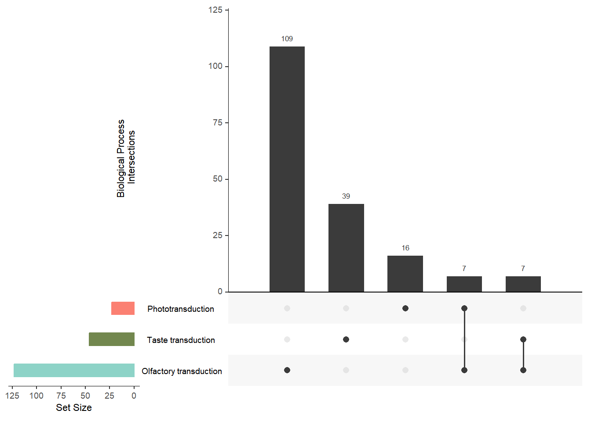
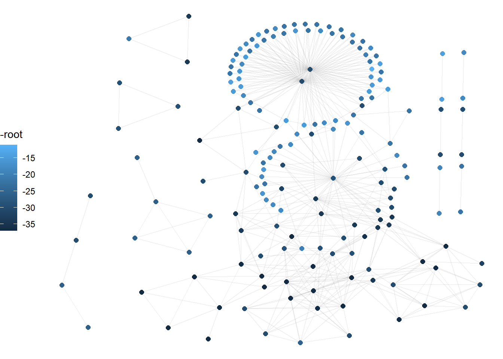
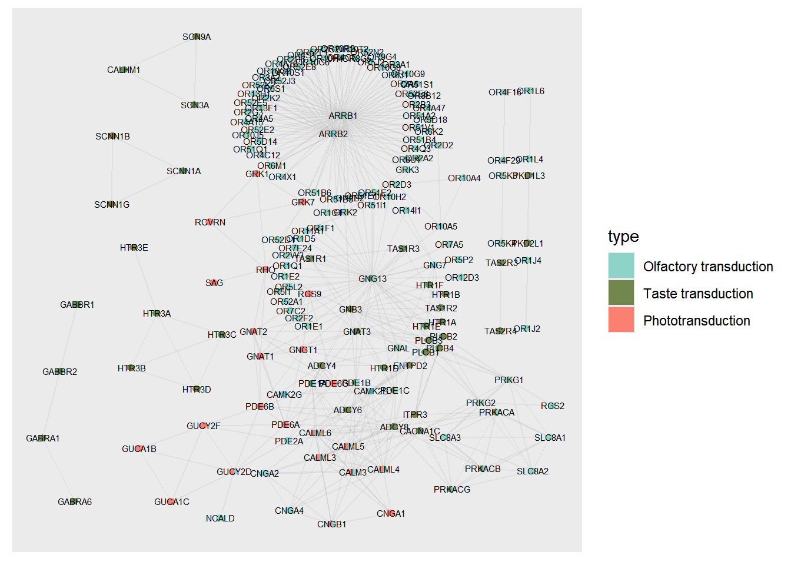
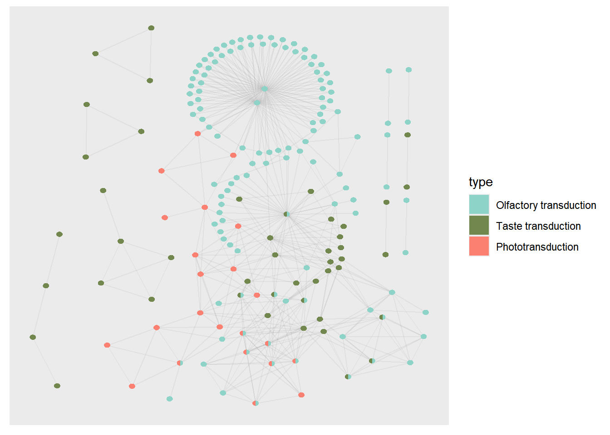
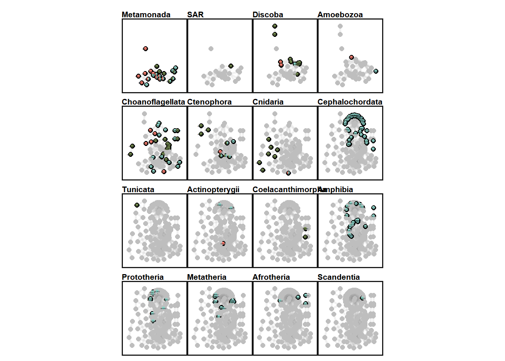
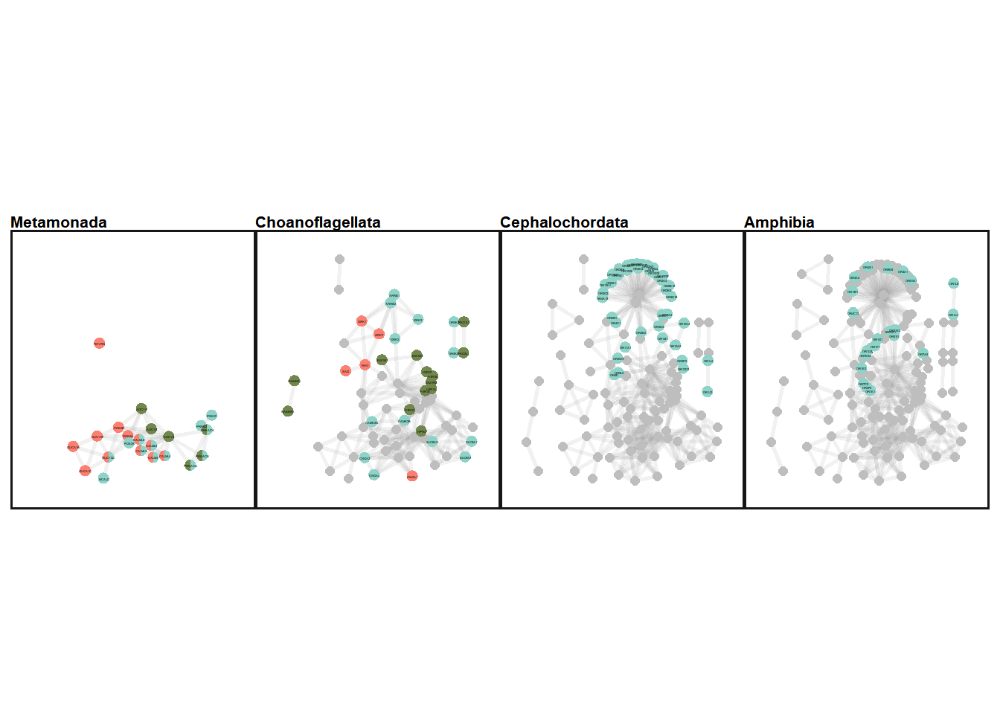
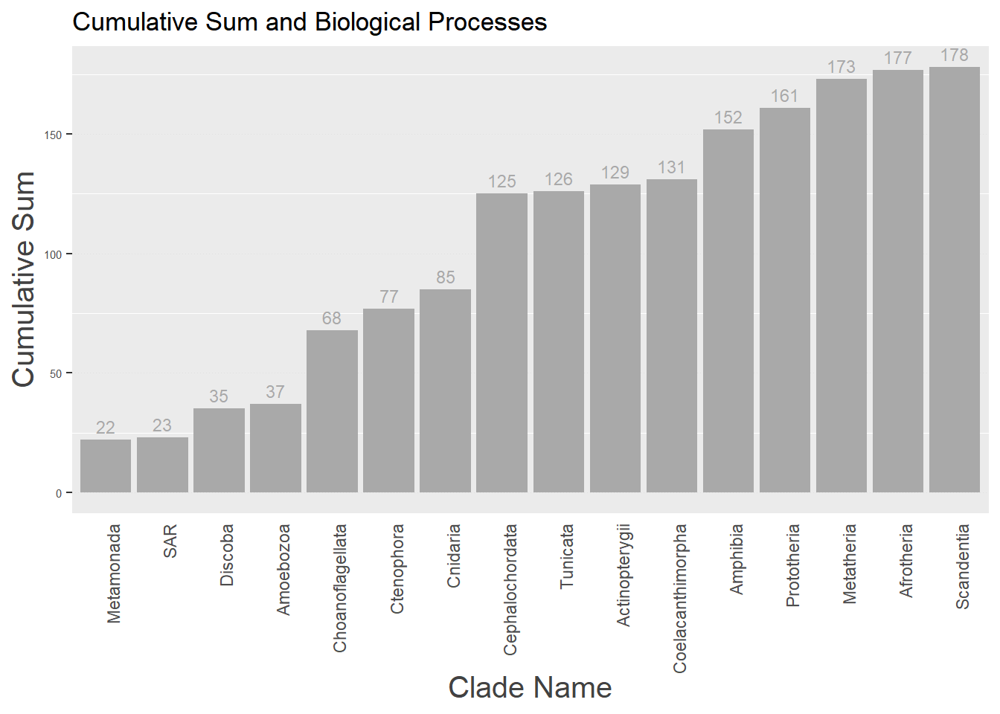
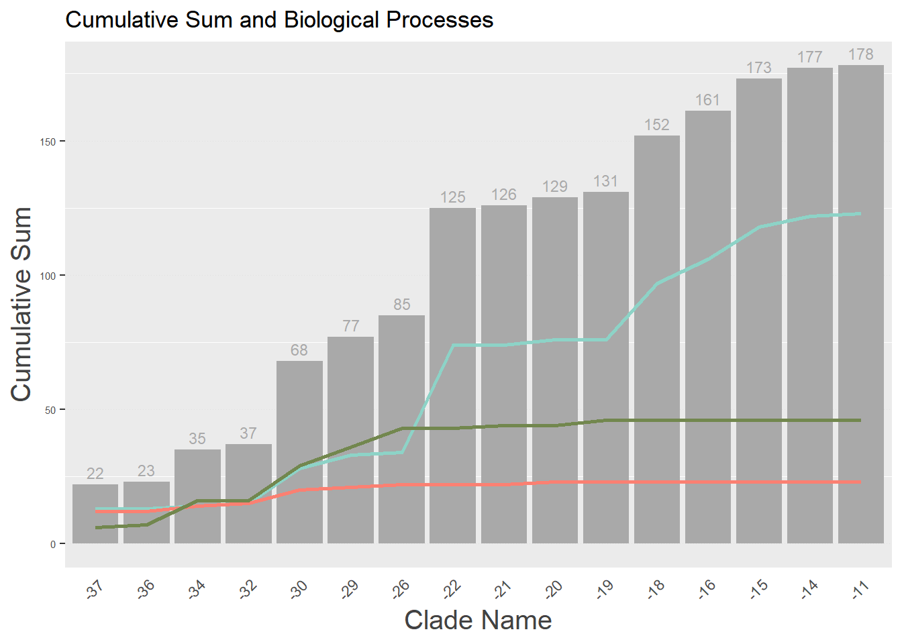
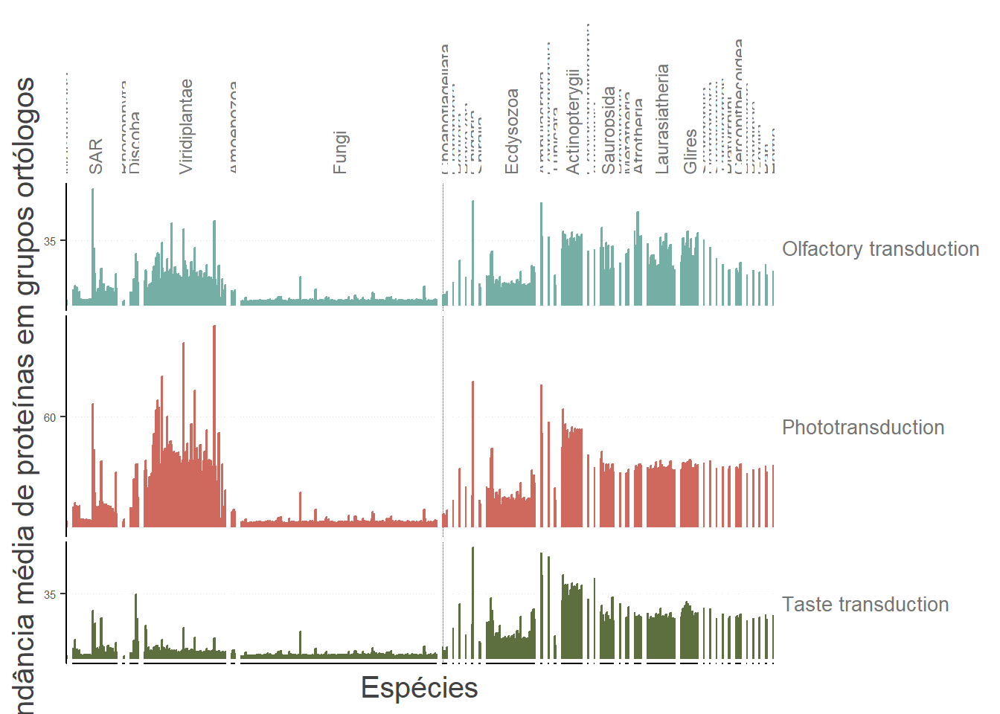

library(GeneBridge)
library(geneplast.data)
library(readr)
library(dplyr)
library(purrr)
library(biomaRt)
library(magrittr)
library(KEGGREST)
library(ape)
library(tidyverse)
library(data.table)
library(stringi)
library(AnnotationHub)
library(sourcetools)
library(here)GeneBridge
1 GeneBridge
1.1 Importing libraries
1.2 Defining functions for later use
get_string_ids searches for the respective protein ID for each gene in the input list.get_network_interaction returns the interactions between these proteins. combine_scores filters the interactions by a combined confidence score greater than 0.4.
# get IDs from STRING DB
get_string_ids <- function(genes_hgnc, species_id = "9606") {
req <- RCurl::postForm(
"https://string-db.org/api/tsv/get_string_ids",
identifiers = paste(genes_hgnc, collapse = "%0D"),
echo_query = "1",
species = species_id,
.opts = list(ssl.verifypeer = FALSE)
)
map_ids <- read.table(text = req, sep = "\t", header = TRUE, quote = "") %>%
dplyr::select(-queryIndex) %>%
unique()
map_ids$stringId <- substring(map_ids$stringId, 6, 1000)
return(map_ids)
}
# Get STRING interactions
get_network_interaction <- function(map_ids, protein_id, species_id = "9606") {
identifiers <- map_ids %>% pull(protein_id) %>% na.omit %>% paste0(collapse="%0d")
req2 <- RCurl::postForm(
"https://string-db.org/api/tsv/network",
identifiers = identifiers,
required_core = "0",
species = species_id,
.opts = list(ssl.verifypeer = FALSE)
)
int_network <- read.table(text = req2, sep = "\t", header = TRUE)
int_network <- unique(int_network)
return(int_network)
}
## Recomputing scores
combine_scores <- function(dat, evidences = "all", confLevel = 0.4) {
if(evidences[1] == "all"){
edat<-dat[,-c(1,2,ncol(dat))]
} else {
if(!all(evidences%in%colnames(dat))){
stop("NOTE: one or more 'evidences' not listed in 'dat' colnames!")
}
edat<-dat[,evidences]
}
if (any(edat > 1)) {
edat <- edat/1000
}
edat<-1-edat
sc<- apply(X = edat, MARGIN = 1, FUN = function(x) 1-prod(x))
dat <- cbind(dat[,c(1,2)],combined_score = sc)
idx <- dat$combined_score >= confLevel
dat <-dat[idx,]
return(dat)
}1.3 Loading gene list and orthology data
We load the orthology data using AnnotationHub. This R package provides a central location where genomic files (VCF, bed, wig) and other resources from standard locations (e.g., UCSC, Ensembl) can be accessed. This way, we have access to the input files for the GeneBridge algorithm.
# Load the Gene Set Table
sensorial_genes <- read.csv("../data/sensorial_genes.csv")
# Query Phylotree and OG data
ah <- AnnotationHub()
meta <- query(ah, "geneplast")
load(meta[["AH83116"]])
head(sensorial_genes)
head(cogdata)1.4 Pre-processing
1.4.1 Mapping
For the following analyses, we need to cross-reference information between our genes of interest (Gene IDs from the sensorial_genes table) and Protein IDs (from the cogdata table). The STRINGdb API is used to map the Gene IDs to the Protein IDs, which allows for filtering the genes of interest in the cogdata table. The final goal is to obtain a filtered set of sensory genes with their respective pathways and COG IDs.
map_ids <- get_string_ids(sensorial_genes$gene_symbol)
# Subsetting cogs of interest - Sensorial Genes
gene_cogs <- cogdata %>%
filter(ssp_id %in% map_ids$ncbiTaxonId) %>%
filter(protein_id %in% map_ids[["stringId"]]) %>%
group_by(protein_id) %>%
summarise(n = n(), cog_id = paste(cog_id, collapse = " / "))
head(map_ids)
#map_ids |>
# vroom::vroom_write(file = here("data/map_ids.csv"), delim = ",")1.4.2 Resolving Duplicate COGs
Due to evolutionary events, such as gene duplication, some genes may be associated with more than one Cluster of Orthologous Groups (COG). To ensure the algorithm’s functionality, it is necessary to resolve these cases by prioritizing COGs according to the following criteria:
- Priority by COG Type: This hierarchy ensures the most functionally relevant annotation is chosen first.
KOGs (euKaryotic Orthologous Groups): have the highest priority. This database is specifically curated for eukaryotes, providing the most contextually accurate annotation.
COGs (Clusters of Orthologous Groups): have the next priority. Originally focused on prokaryotes.
NOGs (from the eggNOG database): are used as the fallback. This is the most comprehensive and general database, covering all domains of life, and is used when a more specific classification isn’t available.
- Cases with COGs from the same database:
- These are resolved manually, based on the annotated function of the COG and the scientific question of the study.
The code below implements this resolution and integrates the corrections into the main table.
gene_cogs %>% filter(n > 1)
# Resolving main proteins
gene_cogs_resolved <- tribble(
~protein_id, ~cog_id,
"ENSP00000332500", "NOG274749", #NOG274749 / NOG274749
"ENSP00000409316", "NOG282909", #NOG282909 / NOG282909 / NOG282909
"ENSP00000480090", "KOG3599" #KOG3599 / KOG3272
)
# Removing unresolved cases and adding manual assignments
gene_cogs %<>%
filter(n == 1) %>%
dplyr:: select(-n) %>%
bind_rows(gene_cogs_resolved)
#gene_cogs |>
# vroom::vroom_write(file = here("data/gene_cogs.csv"), delim = ",")1.5 Processing
The objective of this step is to perform the rooting of the genes of interest using the GeneBridge package. To do this, we use the newBridge, runBridge, and runPermutation functions, which produce statistical results associated with the selected COGs in a phylogenetic tree.
1.5.1 Required Inputs
ogdata:- A dataset containing three main columns:
Protein ID: Identifiers for the proteins.COG ID: Clusters of interest.Specie ID: Identifiers for the species.
- In this example, the
cogdataobject is being used.
- A dataset containing three main columns:
phyloTree:- A phylogenetic tree containing 476 eukaryotes, representing the evolutionary structure among the analyzed species.
ogids:- A list of the COGs of interest. This set is derived from the
gene_cogstable and includes the COGs associated with the proteins after the previous processing step.
- A list of the COGs of interest. This set is derived from the
refsp:- The reference species for rooting. In this example, we use
9606(human).
- The reference species for rooting. In this example, we use
The getBridge function extracts the results generated by GeneBridge in a table format. The res table contains the statistical results of the rooting.
## Run GeneBridge
cogs_of_interest <- gene_cogs %>% pull(cog_id) %>% unique
ogr <- newBridge(ogdata=cogdata, phyloTree=phyloTree, ogids = cogs_of_interest, refsp="9606")
ogr <- runBridge(ogr, penalty = 2, threshold = 0.5, verbose = TRUE)
ogr <- runPermutation(ogr, nPermutations=1000, verbose=FALSE)
res <- getBridge(ogr, what="results")
#saveRDS(ogr, file = "../data/ogr.RData")1.6 Post-Processing
After performing the rooting with GeneBridge, the data needs to be adjusted to improve the visualization and interpretation of the results. In this step, we add clade names to the identified roots by using an external table that maps the root identifiers to their corresponding clade names.
# naming the rooted clades
CLADE_NAMES <- "https://raw.githubusercontent.com/dalmolingroup/neurotransmissionevolution/ctenophora_before_porifera/analysis/geneplast_clade_names.tsv"
lca_names <- vroom::vroom(CLADE_NAMES)
groot_df <- res %>%
tibble::rownames_to_column("cog_id") %>%
dplyr::select(cog_id, root = Root) %>%
left_join(lca_names) %>%
inner_join(gene_cogs)
head(groot_df)
#groot_df |>
# vroom::vroom_write(file = here("data/groot_df.csv"), delim = ",")1.6.1 Protein-Protein Interaction Network
To build a protein-protein interaction (PPI) network we use the STRINGdb API, a database that catalogs interactions between proteins based on various sources, including experimental assays, co-expression, and evidence extracted from scientific publications.
The STRINGdb API provides methods to: - Obtain protein interactions for a list of proteins. - Select specific sources of evidence. - Calculate and combine scores based on the selected evidence.
More information about the API can be found in the STRING API documentation.
# Get proteins interaction
string_edgelist <- get_network_interaction(groot_df)
# Recomputing scores
string_edgelist <- combine_scores(string_edgelist,
evidences = c("ascore", "escore", "dscore"),
confLevel = 0.7)
colnames(string_edgelist) <- c("stringId_A", "stringId_B", "combined_score")
# Remove o species id
string_edgelist$stringId_A <- substring(string_edgelist$stringId_A, 6, 1000)
string_edgelist$stringId_B <- substring(string_edgelist$stringId_B, 6, 1000)
# How many edgelist proteins are absent in gene_ids? (should return 0)
setdiff(
string_edgelist %$% c(stringId_A, stringId_B),
map_ids %>% pull(stringId)
)
head(string_edgelist)To build the graph, in addition to the interactions between proteins, each node must be annotated with additional information that will be used in the analysis, such as: - Protein name. - The clade where it is rooted. - The metabolic pathway in which it participates.
## Create annotation table
nodelist <- data.frame(node = unique(c(string_edgelist$stringId_A, string_edgelist$stringId_B)))
merged_paths <- merge(nodelist, groot_df, by.x = "node", by.y = "protein_id")
pivotada <- sensorial_genes %>%
dplyr::select(gene_symbol, pathway_name) %>%
dplyr::mutate(n = 1) %>%
tidyr::pivot_wider(
id_cols = gene_symbol,
names_from = pathway_name,
values_from = n,
values_fn = list(n = length),
values_fill = list(n = 0),
)
source_statements <-
colnames(pivotada)[2:length(pivotada)]
nodelist <-
nodelist %>%
left_join(merged_paths, by = c("node" = "node")) %>%
left_join(map_ids, by = c("node" = "stringId")) %>%
left_join(pivotada, by = c("queryItem" = "gene_symbol"))
head(nodelist)In addition to the graph’s structure, we can calculate metrics such as the number of connections (degree) for each node.
# Network Metrics
connected_nodes <- rle(sort(c(string_edgelist[,1], string_edgelist[,2])))
connected_nodes <- data.frame(count=connected_nodes$lengths, node=connected_nodes$values)
connected_nodes <- left_join(nodelist, connected_nodes, by = c("node" = "node"))
connected_nodes <- dplyr::select(connected_nodes, queryItem, root, clade_name, count)
head(connected_nodes)#nodelist |>
# vroom::vroom_write(file = here("data/nodelist.csv"), delim = ",")
#string_edgelist |>
# vroom::vroom_write(file = here("data/string_edgelist.csv"), delim = ",")
#merged_paths |>
# vroom::vroom_write(file = here("data/merged_paths.csv"), delim = ",")1.7 Importing libraries
library(ggplot2)
library(ggraph)
library(dplyr)
library(tidyr)
library(igraph)
library(purrr)
library(vroom)
library(paletteer)
library(easylayout)
library(UpSetR)
library(tinter)
library(here)
library(dplyr)1.8 Defining functions
# Set colors
color_mappings <- c(
"Olfactory transduction" = "#8dd3c7"
,"Taste transduction" = "#72874EFF"
,"Phototransduction" = "#fb8072"
)
subset_graph_by_root <-
function(geneplast_result, root_number, graph) {
filtered <- geneplast_result %>%
filter(root >= root_number) %>%
pull(node)
induced_subgraph(graph, which(V(graph)$name %in% filtered))
}
adjust_color_by_root <- function(geneplast_result, root_number, graph) {
filtered <- geneplast_result %>%
filter(root == root_number) %>%
pull(node)
V(graph)$color <- ifelse(V(graph)$name %in% filtered, "black", "gray")
return(graph)
}
# Configure graph collors by genes incrementation
subset_and_adjust_color_by_root <- function(geneplast_result, root_number, graph) {
subgraph <- subset_graph_by_root(geneplast_result, root_number, graph)
adjusted_graph <- adjust_color_by_root(geneplast_result, root_number, subgraph)
return(adjusted_graph)
}
plot_network <- function(graph, title, nodelist, xlims, ylims, legend = "none") {
# Generate color map
source_statements <-
colnames(nodelist)[10:length(nodelist)]
color_mappings <- c(
"Olfactory transduction" = "#8dd3c7"
,"Taste transduction" = "#72874EFF"
,"Phototransduction" = "#fb8072"
)
vertices <- igraph::as_data_frame(graph, "vertices")
ggraph:: ggraph(graph,
"manual",
x = V(graph)$x,
y = V(graph)$y) +
ggraph::geom_edge_link0(edge_width = 1, color = "#90909020") +
ggraph::geom_node_point(ggplot2::aes(color = I(V(graph)$color)), size = 2) +
scatterpie::geom_scatterpie(
aes(x=x, y=y, r=18),
cols = source_statements,
data = vertices[rownames(vertices) %in% V(graph)$name[V(graph)$color == "black"],],
colour = NA,
pie_scale = 1
) +
geom_node_text(aes(label = ifelse(V(graph)$color == "black", V(graph)$queryItem, NA)),
nudge_x = 1, nudge_y = 1, size = 0.5, colour = "black") +
ggplot2::scale_fill_manual(values = color_mappings, drop = FALSE) +
ggplot2::coord_fixed() +
ggplot2::scale_x_continuous(limits = xlims) +
ggplot2::scale_y_continuous(limits = ylims) +
ggplot2::theme_void() +
ggplot2::theme(
legend.position = legend,
legend.key.size = ggplot2::unit(0.5, 'cm'),
legend.key.height = ggplot2::unit(0.5, 'cm'),
legend.key.width = ggplot2::unit(0.5, 'cm'),
legend.title = ggplot2::element_text(size=6),
legend.text = ggplot2::element_text(size=6),
panel.border = ggplot2::element_rect(
colour = "#161616",
fill = NA,
linewidth = 1
),
plot.title = ggplot2::element_text(size = 8, face = "bold")
) +
ggplot2::guides(
color = "none",
fill = "none"
) +
ggplot2::labs(fill = "Source:", title = title)
}1.9 Loading required data
#Load data (need to save tables from first qmd)
nodelist <- vroom::vroom(file = here("data/nodelist.csv"), delim = ",")
string_edgelist <- vroom::vroom(file = here("data/string_edgelist.csv"), delim = ",")
merged_paths <- vroom::vroom(file = here("data/merged_paths.csv"), delim = ",")1.10 Visualization with UpSet Plot
The UpSet Plot is a useful tool for visualizing the distribution and intersection of genes among different metabolic pathways. It allows for the identification of how genes are shared or are exclusive among the analyzed categories.
upset(dplyr::select(as.data.frame(nodelist),
"Olfactory transduction",
"Taste transduction",
"Phototransduction"),
nsets = 50, nintersects = NA,
sets.bar.color = c("#8dd3c7", "#72874EFF", "#fb8072"),
mainbar.y.label = "Biological Process \nIntersections",
sets.x.label = "Set Size")
1.11 Protein-Protein Interaction Network Visualization
Interaction network visualization is essential for understanding the functional connections between proteins. Here, we use the easylayout package, developed by Danilo Imparato, to generate an efficient layout. This package organizes the network nodes into x and y coordinates, allowing for a structured and clear visualization. Subsequently, the graph will be plotted using ggraph.
## Graph Build
#graph <-
# graph_from_data_frame(string_edgelist, directed = FALSE, vertices = nodelist)
#layout <- easylayout::easylayout(graph)
#V(graph)$x <- layout[, 1]
#V(graph)$y <- layout[, 2]
#save(graph, file = "../data/graph_layout")1.11.1 Visualization of Each Node’s Ancestry
Analyzing the ancestry of each node in the network provides an evolutionary perspective on the analyzed proteins. Here, we use ggraph to plot the graph with the positions previously saved by easylayout.
The nodes are colored according to the distance from the Last Common Ancestor (LCA) of the analyzed clades and humans (Human-LCA). The darker shade indicates older clades relative to humans, while light shades of blue represent newer clades that are closer to the Human-LCA.
load("../data/graph_layout")
ggraph(graph, "manual", x = V(graph)$x, y = V(graph)$y) +
geom_edge_link0(color = "#90909020") +
geom_node_point(aes(color = -root), size = 2) +
theme_void() +
theme(legend.position = "left")
1.11.2 Visualization of the Protein-Protein Interaction Network in Humans
To better understand the relationship between human proteins, we plot the interaction network where the nodes represent human genes associated with their biological processes.
1.11.2.1 Description of the graph elements:
- Nodes (Circles): The colors of the nodes are divided according to the biological processes assigned to each gene. The use of pie charts allows for the visualization of genes that participate in multiple processes.
- Edges (Lines): These represent the protein interactions based on data from STRINGdb.
- Gene Labels: Each node is annotated with its corresponding gene symbol, strategically positioned for easy reading.
## Plotting Human PPI Network
#ppi_labaled <-
ggraph::ggraph(graph,
"manual",
x = V(graph)$x,
y = V(graph)$y) +
ggraph:: geom_edge_link0(edge_width = 0.5, color = "#90909020") +
scatterpie::geom_scatterpie(
cols = colnames(nodelist[10:12]),
data = igraph::as_data_frame(graph, "vertices"),
colour = NA,
pie_scale = 0.40
) +
geom_node_text(aes(label = nodelist$queryItem), colour = "black", nudge_x = 0.8, nudge_y = 0.8, size = 2) +
ggplot2::scale_fill_manual(values = color_mappings, drop = FALSE)
#ppi <-
ggraph::ggraph(graph,
"manual",
x = V(graph)$x,
y = V(graph)$y) +
ggraph:: geom_edge_link0(edge_width = 0.5, color = "#90909020") +
scatterpie::geom_scatterpie(
cols = colnames(nodelist[10:12]),
data = igraph::as_data_frame(graph, "vertices"),
colour = NA,
pie_scale = 0.40
) +
ggplot2::scale_fill_manual(values = color_mappings, drop = FALSE)
1.11.3 2.3. Visualization of the Protein-Protein Interaction Network in Each Clade
In this section, we visualize the genes that are statistically rooted in each clade. The arrangement of the genes allows us to observe the increase in orthologous genes as a function of the biological system’s complexity and age.
1.11.3.1 Visualization Features:
- Graph Evolution: The graphs are organized from left to right and top to bottom, allowing for the analysis of evolutionary progression.
- Node Coloring: The color of the nodes indicates the level of ancestry, as previously highlighted, where darker shades represent older clades and lighter shades indicate evolutionary proximity to humans.
- Organisms of Interest: In addition to visualizing all clades, it is possible to generate graphs focused only on specific groups, such as Metamonada, Choanoflagellata, Cephalochordata, and Amphibia.
With these visualizations, it is possible to identify patterns of gene evolution across different clades and perform detailed comparisons with specific organisms of interest.
geneplast_roots <- merged_paths[order(merged_paths$root), ]
buffer <- c(-50, 50)
xlims <- ceiling(range(V(graph)$x)) + buffer
ylims <- ceiling(range(V(graph)$y)) + buffer
roots <- unique(geneplast_roots$root) %>%
set_names(unique(geneplast_roots$clade_name))
# Subset graphs by LCAs
subsets <-
map(roots, ~ subset_and_adjust_color_by_root(geneplast_roots, .x, graph))
# Plot titles
titles <- names(roots)
plots <-
map2(
subsets,
titles,
plot_network,
nodelist = nodelist,
xlims = xlims,
ylims = ylims,
legend = "right"
) %>%
discard(is.null)
#net_all_roots <-
patchwork::wrap_plots(
rev(plots),
nrow = 4,
ncol = 4
)
#ggsave(file = "../data/network_rooting.svg", plot=net_all_roots, width=10, height=8)patchwork::wrap_plots(
plots$Metamonada, plots$Choanoflagellata, plots$Cephalochordata, plots$Amphibia,
ncol = 4
)
1.12 Importing libraries
library(here)
library(readr)
library(magrittr)
library(ggplot2)
library(hrbrthemes)
library(tinter)
library(dplyr)
library(tidyr)
library(AnnotationHub)1.13 Defining Functions
The purpose of these functions is to organize the vertex annotations in our nodelist and to calculate the cumulative number of genes by clade and by biological process.
calculate_cumulative_genes <- function(nodelist) {
# Get all possible categories of clade_name
all_clades <- node_annotation %>%
arrange(desc(root)) %>%
dplyr::select(clade_name) %>%
unique()
# Define the columns of interest
process_columns <- c("queryItem", "root", "clade_name",
"Olfactory transduction",
"Taste transduction",
"Phototransduction")
# Calculate the cumulative sum, grouping by clade_name
cumulative_genes <- nodelist %>%
arrange(desc(root)) %>%
dplyr::select(all_of(process_columns)) %>%
group_by(clade_name, root) %>%
summarise(count_genes = n(), .groups = "drop") %>%
arrange(desc(root)) %>%
mutate(cumulative_sum = cumsum(count_genes)) %>%
right_join(all_clades, by = "clade_name") %>%
fill(cumulative_sum, .direction = "down")
return(cumulative_genes)
}
calculate_cumulative_bp <- function(nodelist) {
# Get all possible categories of clade_name
all_clades <- node_annotation %>%
arrange(desc(root)) %>%
dplyr::select(clade_name) %>%
unique()
# Define the columns of interest
process_columns <- c("queryItem", "root", "clade_name",
"Olfactory transduction",
"Taste transduction",
"Phototransduction")
# Calculate the cumulative sum for each biological process
cumulative_bp <- nodelist %>%
dplyr::select(all_of(process_columns)) %>%
distinct(root, queryItem, .keep_all = TRUE) %>%
mutate(across(all_of(process_columns[-c(1:3)]), ~ as.numeric(.))) %>%
group_by(root, clade_name) %>%
summarise(across(all_of(process_columns[-c(1:3)]),
~ sum(. , na.rm = TRUE)),
.groups = "drop") %>%
arrange(desc(root)) %>%
mutate(across(all_of(process_columns[-c(1:3)]), ~ cumsum(.))) %>%
right_join(all_clades, by = "clade_name") %>%
fill(everything(), .direction = "down")
return(cumulative_bp)
}1.14 Defining Aesthetic Parameters for ggplot
Assigning default colors for the metabolic pathways in the analysis and defining the other aesthetic standards for plotting.
# Plotting colors and labels
annotation_colors <- c(
"Olfactory transduction" = "#8dd3c7"
,"Taste transduction" = "#72874EFF"
,"Phototransduction" = "#fb8072"
)
annotation_labels <- c(
"Olfactory transduction" = "Olfactory transduction"
,"Taste transduction" = "Taste transduction"
,"Phototransduction" = "Phototransduction"
)
# This vertical line indicates the first metazoan (Amphimedon queenslandica / Ctenophora)
choanoflagellata_line <- geom_vline(
xintercept = "Sphaeroforma arctica"
,color = "#FF0000"
,linetype = "11"
,alpha = 1
,linewidth = 0.25
)
# Plotting
theme_main <- theme(
panel.spacing = unit(2.5, "pt")
,strip.background = element_blank()
,panel.grid.major.x = element_blank()
,panel.grid.major.y = element_line(linewidth = 0.25, linetype = "dotted", color = "#E0E0E0")
,strip.text.x = element_text(size = 9, angle = 90, hjust = 0, vjust = 0.5, color = "#757575")
,strip.text.y = element_text(size = 10, angle = 0, hjust = 0, vjust = 0.5, color = "#757575")
,axis.title = element_text(size = 15, color = "#424242")
,axis.ticks.x = element_blank()
,axis.text.x = element_blank()
,axis.text.y = element_text(size = 5.5)
,legend.position = "none"
)
theme_supplementary <- theme(
panel.grid.major.x = element_line(color = "#E0E0E0", linewidth = 0.25, linetype = "dotted")
,panel.grid.major.y = element_blank()
,strip.text.y = element_text(size = 7, angle = 0, hjust = 0, vjust = 0.5, color = "#757575")
,strip.text.x = element_text(size = 7, angle = 90, hjust = 0, vjust = 0.5, color = "#757575")
,axis.title = element_text(size = 12, color = "#424242")
,axis.ticks = element_line(colour = "grey20")
,axis.text.y = element_text(size = 6, angle = 0, hjust = 1, vjust = 0.5, color = "#757575")
,axis.text.x = element_text(size = 6)
)
theme_average <- theme(
panel.spacing = unit(1, "pt")
,axis.title = element_text(color = "#424242")
,axis.text = element_text(color = "#757575")
,axis.text.x = element_text(size = 7, angle = -45, vjust = 0, hjust = 0)
,axis.text.y = element_text(size = 5)
,strip.background = element_blank()
,strip.text = element_text(color = "#757575")
,strip.text.y = element_text(angle = 0, hjust = 0, vjust = 0.5)
)
theme_big <- theme(
panel.spacing = unit(0.5, "pt")
,panel.grid.major.x = element_line(linewidth = 0.1, linetype = "dashed")
,panel.grid.major.y = element_blank()
,strip.background = element_blank()
,strip.text.x = element_text(size = 8, angle = 90, hjust = 0.5, vjust = 0)
,strip.text.y = element_text(size = 8, angle = 0, hjust = 0, vjust = 0.5)
,axis.text.x = element_text(size = 6, angle = 90, vjust = 0, hjust = 0)
,axis.text.y = element_text(size = 4.5)
,axis.ticks = element_line(size = 0.1)
)
tick_function <- function(x) {
seq(x[2], 0, length.out = 3) %>% head(-1) %>% tail(-1) %>% { ceiling(./5)*5 }
}1.15 Loading Necessary Tables
To proceed with the analysis, it is necessary to load a table containing the taxid information for each species. This information will later be used to map the species’ taxids with the taxids of each COG.
1.15.1 Table Description
- File Name:
string_eukaryotes.rda - Content: Taxonomic information for eukaryotic species.
The table loads the following main fields: - TaxID (taxonomic identifier): A unique identifier associated with each species. - Species name
# Query Phylotree and OG data
#ah <- AnnotationHub()
#meta <- query(ah, "geneplast")
#load(meta[["AH83116"]])
nodelist <- vroom::vroom(file = here("data/nodelist.csv"), delim = ",")
gene_cogs <- vroom::vroom(file = here("data/gene_cogs.csv"), delim = ",")
sensorial_genes <- read.csv("../data/sensorial_genes.csv")
map_ids <- vroom::vroom("../data/map_ids.csv")
groot_df <- vroom::vroom("../data/groot_df.csv")
ogr <- readRDS("../data/ogr.RData")
load("../data/string_eukaryotes.rda")
head(string_eukaryotes)1.16 Visualization: Rooting Pattern
This visualization allows for the analysis of the cumulative pattern of gene emergence over evolutionary time. Additionally, it shows the growth of biological processes, separated by each metabolic pathway.
1.16.1 Graph Characteristics
- Bar Chart (Cumulative Pattern):
- Represents the cumulative sum of genes associated with each clade.
- Each bar displays the total accumulated genes in a given clade, allowing for the identification of the diversification pattern.
- Combined Chart (Bars and Lines):
- The bars indicate the cumulative sum of genes per clade.
- The lines represent the growth of different biological processes (Process), separated by metabolic pathways, allowing for a comparison between the cumulative emergence of genes and the development of biological functions.
1.16.2 Interpretation
- Cumulative Pattern: The bar chart shows how genes have emerged cumulatively over time. This perspective helps to identify moments of greater genetic diversification.
- Comparison by Biological Processes: The combined chart allows us to observe which biological processes stand out at different moments in evolution and how they are related to the emergence of new genes.
# Mapping roots and proteins info
node_annotation <- nodelist %>%
inner_join(gene_cogs, by = c("node" = "protein_id", "cog_id")) %>%
inner_join(sensorial_genes, by = c("queryItem" = "gene_symbol")) %>%
distinct(queryItem, cog_id, pathway_name, root, clade_name)
cumulative_genes <- calculate_cumulative_genes(nodelist)
cumulative_bp <- calculate_cumulative_bp(nodelist)
cumulative_data <- left_join(cumulative_genes, cumulative_bp)
long_data <- cumulative_data %>%
pivot_longer(cols = 5:7,
names_to = "Process",
values_to = "Value")
ggplot() +
geom_bar(data = cumulative_data,
aes(x = factor(clade_name, levels = clade_name), y = cumulative_sum),
stat = "identity", fill = "darkgray", colour = NA) +
geom_text(data = cumulative_data,
aes(x = factor(clade_name, levels = clade_name), y = cumulative_sum, label = cumulative_sum),
vjust = -0.5, size = 3, color = "darkgray") +
scale_color_manual(values = annotation_colors) +
labs(x = "Clade Name", y = "Cumulative Sum",
title = "Cumulative Sum and Biological Processes",
fill = "Cumulative Sum",
color = "Biological Processes") +
theme_main +
theme(axis.text.x = element_text(angle = 90, hjust = 1))
ggplot() +
geom_bar(data = cumulative_data,
aes(x = factor(-root), y = cumulative_sum),
stat = "identity", fill = "darkgray", colour = NA) +
geom_text(data = cumulative_data,
aes(x = factor(-root), y = cumulative_sum, label = cumulative_sum),
vjust = -0.5, size = 3, color = "darkgray") +
geom_line(data = long_data,
aes(x = factor(-root), y = Value, color = Process, group = Process),
size = 1) +
scale_color_manual(values = annotation_colors) +
labs(x = "Clade Name", y = "Cumulative Sum",
title = "Cumulative Sum and Biological Processes",
fill = "Cumulative Sum",
color = "Biological Processes") +
theme_main +
theme(axis.text.x = element_text(angle = 45, hjust = 1))
#ggsave(file = "", plot=a, width=15, height=8)
#ggsave(file = "", plot=b, width=15, height=8)1.17 Hipergeometric Test
The hypergeometric test is a statistical method used to determine if a set of genes of interest (in this case, genes from a specific clade) is significantly enriched with genes from a certain functional category (a biological process, such as “Olfactory transduction”).
Essentially, this test answers the question: “Is the frequency of genes for a certain function within this evolutionary group higher than we would expect by random chance?”. A significant result (low p-value) suggests that the increase in these genes was a relevant evolutionary event for that clade, linking gene expansion to the development of a specific biological capability.
clades <- unique(nodelist$clade_name)
processes <- c("Olfactory transduction", "Taste transduction", "Phototransduction" )
result <- list()
for (process in processes) {
for (clade in clades) {
N <- length(unique(sensorial_genes$gene_symbol))
M <- sum(sensorial_genes$pathway_name == process)
n <- length(which(nodelist$clade_name == clade))
k <- sum(filter(nodelist, clade_name == clade)[[process]])
p_valor <- 1 - phyper(k - 1, M, N - M, n)
result[[paste(process, clade, sep = "_")]] <- c(process, clade, k, M, N, n, p_valor)
}
}
hipergeometric_df <- do.call(rbind, result) %>%
as.data.frame() %>%
setNames(c("Process", "clade_name", "k", "M", "N", "n", "p.val")) %>%
arrange(p.val)
rownames(hipergeometric_df) <- NULL
hipergeometric_df <- hipergeometric_df %>%
mutate(across(all_of(c("k", "M", "N", "n", "p.val")), as.numeric))
head(hipergeometric_df)1.18 Results Visualization
The code generates a bubble chart to visualize the analysis results:
Axes: The Y-axis shows the clades (evolutionary groups), and the X-axis shows the biological processes.
Point Size: The size of each point is proportional to the number of sensory genes found in that clade.
Point Color: The color highlights whether the functional enrichment was statistically significant (red) or not (gray).
hipergeometric_df$p.val_color <- ifelse(hipergeometric_df$p.val > 0.05, "gray", "red")
i <- nodelist %>%
dplyr::select(clade_name, root) %>%
unique()
hipergeometric_df <- hipergeometric_df %>%
inner_join(i, by = "clade_name")
hipergeometric_df$clade_name <- factor(hipergeometric_df$clade_name,
levels = unique(hipergeometric_df$clade_name[order(hipergeometric_df$root)]))
hipergeometric_df$Process <- factor(hipergeometric_df$Process,
levels = c("Olfactory transduction",
"Taste transduction",
"Phototransduction" ))
ggplot(hipergeometric_df, aes(x = Process,
y = clade_name,
size = as.numeric(n),
color = p.val_color)) +
geom_point() +
scale_color_manual(values = c("gray" = "gray", "red" = "red"),
labels = c("Not Significant", "Significant")) +
labs(x = "Biological Process", y = "Clade", size = "Number of Genes", color = "Significance") +
scale_size_continuous(breaks = c(1, 20, 40), labels = c("1 genes", "20 genes", "40 genes")) +
theme_minimal() +
ggtitle("Hipergeometric Test") +
theme(axis.text.x = element_text(angle = 45, hjust = 1),
panel.grid.major.x = element_blank(),
panel.grid.major.y = element_blank()) +
theme(axis.text.y = ggtext::element_markdown())